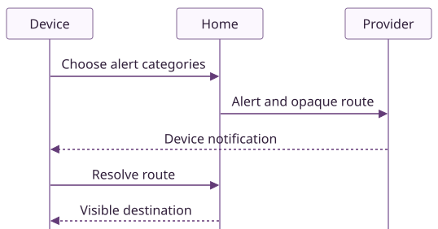

Inbox and notifications
Yap’s activity inbox tracks replies, encrypted mail and message requests. Each installation chooses which kinds of alerts to receive.
Opening a device alert
A registered installation opts into categories supported by its Home. A provider delivers a generic alert with an opaque route. Opening it makes a new authenticated request. The Home checks current visibility before returning the destination.

Reading activity
Reply activity groups visible responses by thread and carries a read position. Opening a thread uses its target and anchor. Marking a category and target read advances the saved position through a given sequence. Muting a thread suppresses its reply notifications.
Mail and held requests
Message and request rows are available to the registered messaging installation. Accepting a held sender releases their mail. Dismissing the request clears the held packet. Blocking also prevents future delivery. The encrypted mailbox has its own delivery cursor, separate from notification read positions.
Provider delivery
Web Push, FCM and APNs depend on Home and platform configuration. The authenticated Home stores subscriptions, category choices and pending deliveries. Push carries the generic alert and route, while message contents and thread details are retrieved through their usual authorized channels.